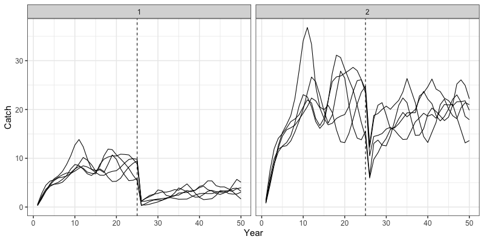
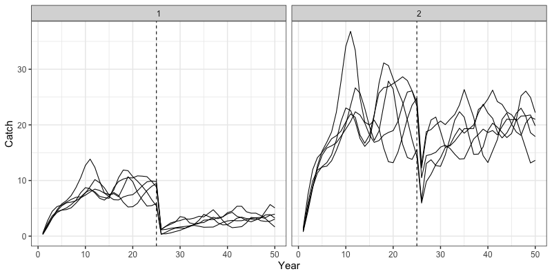

Run Closed Loop Simulations
h_closed_loop_simulations.RmdIn addition to being an estimation model, SPoRC also has
the capacity to conduct closed loop simulations to evaluate the impacts
of estimation model assumptions and harvest strategies on different
operating models. These closed loop simulations can be conducted on
either spatially-explicit or panmicitic populations. In this vignette,
we will demonstrate how a spatially-explicit closed-loop simulation by
outlining the following steps:
- Define an operating model (the truth),
- Define an estimation model to use in the closed-loop simulation,
- Setup the simulation loop to run an operating and estimation model,
- Derive reference points and management advice using estimates from the estimation model, and
- Return management advice back into the annual cycle, completing the closed loop simulation.
Let us first load in the SPoRC package.
Define Operating Model
We can then define an operating model we want to condition a population on. Parameter estimates used here are purely hypothetical and generally represents a short-lived species. Operating model simulation can be defined with the following code:
# Set up model dimensions
sim_list <- Setup_Sim_Dim(n_sims = 5, # number of simulations to conduct
n_yrs = 50, # number of years
n_regions = 2, # number of regions
n_ages = 8, # number of ages
n_sexes = 1, # number of sexes
n_fish_fleets = 1, # number of fishery fleets
n_srv_fleets = 1, # number of survey fleets
run_feedback = T, # specifies whether to run this as a closed-loop
feedback_start_yr = 25 # when the closed loop starts
)We can then create a variety of simulation objects to store results in:
# set up containers
sim_list <- Setup_Sim_Containers(sim_list)Initial values for fishing mortality need to then be supplied. In
this case, an array Fmort gets populated with values
according to the specified fishing mortality patterns, and the remaining
values following feedback_start_yr = 25 are left as zeros,
which will be populated in the closed-loop simulation.
# Setup fishing mortality
sim_list <- Setup_Sim_FishMort(sim_list = sim_list, # simulation list defined from above
sigmaC = 1e-3, # observation error for catch
init_F_vals = matrix(0, nrow = sim_list$n_regions, ncol = sim_list$n_fish_fleets), # initial F values to impose on initial age structure
Fmort_pattern = matrix(c('one-way', "one-way"), nrow = sim_list$n_regions, ncol = sim_list$n_fish_fleets), # fishing mortality pattern
Fmort_start = matrix(c(0.01, 0.01), nrow = sim_list$n_regions, ncol = sim_list$n_fish_fleets), # start value of fishing mortality
Fmort_fct = matrix(c(50, 50), nrow = sim_list$n_regions, ncol = sim_list$n_fish_fleets), # factor to multiply fmort_start by to reach apicial F
proc_error = FALSE, # whether or not to have fishing mortality process error
proc_error_sd = 0 # process error on fishing mortality
)Fishery selectivity dynamics can then be specified with the following function:
sim_list <- Setup_Sim_FishSel(sel_model = matrix(c('logistic', "logistic"), nrow = sim_list$n_regions, ncol = sim_list$n_fish_fleets), # selex model
# a50, k for logistic shared across regions
fixed_fish_sel_pars = array(c(3,3,1,1), dim = c(sim_list$n_regions, sim_list$n_sexes, sim_list$n_fish_fleets, 2)),
sim_list = sim_list # simulation list from previous code chunk
)Similarly, survey dynamics can be defined, where a user can define the observation error of the survey, survey catchability, and survey selectivity:
sim_list <- Setup_Sim_Survey(sim_list = sim_list,
sigmaSrvIdx = array(0.05, dim = c(sim_list$n_regions, sim_list$n_srv_fleets)), # survey observation error
base_srv_q = array(1, dim = c(sim_list$n_regions, sim_list$n_srv_fleets)), # base survey catchability value
srv_q_pattern = matrix(c('constant', "constant"), nrow = sim_list$n_regions, ncol = sim_list$n_srv_fleets), # catchability pattern
sel_model = matrix(c('logistic', "logistic"), nrow = sim_list$n_regions, ncol = sim_list$n_srv_fleets), # selectivity model
# a50, k, for logistic shared across regions
fixed_srv_sel_pars = array(c(3,3,1,1), dim = c(sim_list$n_regions, sim_list$n_sexes, sim_list$n_srv_fleets, 2))
)Recruitment dynamics can be defined with the code chunk below, where various options are available, including whether recruits move, the recruitment sex-ratio, recruitment parameters and recruitment functional forms, as well as whether recruitment occurs globally or locally (only applicable in a spatial context). Here, region 1 is assumed to be more productive than region 2.
# Setup recruitment stuff
sim_list <- Setup_Sim_Rec(
sim_list = sim_list,
do_recruits_move = "dont_move", # == 0, recruits don't move , == 1 recruits move
base_rec_sexratio = 1, # single sex
rec_sexratio_vary = "constant", # sex ratio type
base_r0 = c(100, 50),
r0_vary = "constant", # R0 type
base_h = c(0.8, 0.8), # base steepness values
init_sigmaR = 0.5, # inital deviations variability
sigmaR = 0.5, # sigma R
recruitment_opt = "bh_rec", # recruitment option
rec_dd = "global", # recruitment deviations density dependence
init_dd = "global", # initial age deviations density dependence
rec_lag = 1 # recruitment ssb lag
)Biological features of the population can then be defined with the code chunk below, with ability to define natural mortality values, weight-at-age, maturity-at-age, and patterns for these biological dynamics.
sim_list <- Setup_Sim_Biologicals(
sim_list = sim_list,
base_M_value = array(0.5, dim = c(sim_list$n_regions, sim_list$n_ages, sim_list$n_sims)), # base M value
M_pattern = "constant", # M pattern
base_WAA_values = array(rep(5 / (1 + exp(-1 * (1:sim_list$n_ages - 5))), each = sim_list$n_regions * sim_list$n_sexes),
dim = c(sim_list$n_regions, sim_list$n_ages, sim_list$n_sexes)), # weight-at-age values
base_WAA_fish_values = array(rep(5 / (1 + exp(-1 * (1:sim_list$n_ages - 5))), each = sim_list$n_regions * sim_list$n_sexes),
dim = c(sim_list$n_regions, sim_list$n_ages, sim_list$n_sexes, sim_list$n_fish_fleets)), # weight at age fishery
WAA_pattern = "constant", # weight-at-age patterns
base_Maturity_AA_values = array(rep(1 / (1 + exp(-2 * (1:sim_list$n_ages - 5))), each = sim_list$n_regions * sim_list$n_sexes),
dim = c(sim_list$n_regions, sim_list$n_ages, sim_list$n_sexes)), # matrutiy at age values
Maturity_AA_pattern = "constant" # maturity at age patterns
)Because movement dynamics can be incredibly complex, we have designed
it such that users supply their own defined movement “matrix”. This
matrix then needs to be input into the sim_list object for
use. Here, we are defining movement such that individuals move from the
more productive region (region 1) to the less
ref <- 1
movement_matrix <- array(0, dim = c(sim_list$n_regions, sim_list$n_regions, sim_list$n_yrs, sim_list$n_ages, sim_list$n_sexes, sim_list$n_sims)) # From, To
base <- matrix(c(0, 1), sim_list$n_regions, sim_list$n_regions, byrow = TRUE)
# Plug in movement process error
for(sim in 1:sim_list$n_sims) {
for(a in 1:sim_list$n_ages) {
for(s in 1:sim_list$n_sexes) {
for(y in 1:sim_list$n_yrs) {
for(r in 1:sim_list$n_regions) {
tmp_move <- base[r,]
tmp_move[-ref] <- tmp_move[-ref]
movement_matrix[r,,y,a,s,sim] <- exp(tmp_move) / sum(exp(tmp_move))
} # end r loop
} # end y loop
} # end s loop
} # end a loop
} # end sim loop
sim_list$movement_matrix <- movement_matrixLastly, observation processes need to be defined for the simulation, which includes observations for tagging data, survey indices, fishery and survey age compositions. This is done with the following functions:
sim_list <- Setup_Sim_Tagging(
sim_list = sim_list,
n_tags = 5000, # number of total tags to release in a year
max_liberty = 30, # maximum number of years to track a cohort
tag_years = seq(1, sim_list$n_yrs, 1), # number of years tagging occurs
t_tagging = 0.5, # time of tagging
base_Tag_Reporting = c(0.2, 0.2), # base tag reporting rates
Tag_Reporting_pattern = "constant", # tag reporting rate pattern
Tag_Ind_Mort = 0, # initial tag induced mortality
Tag_Shed = 0 # chronic tag shedding
)
# Setup observation processes
sim_list <- Setup_Sim_Observation_Proc(
sim_list = sim_list,
Comp_Structure = "spltR_jntS", # how compositions should be structured
Comp_Srv_Like = "Multinomial", # survey comp likelihood
Comp_Fish_Like = "Multinomial", # fishery comp likelihood
ISS_FishAge_Pattern = 'constant', # input sample size pattern (should be constant in closed loop)
FishAgeTheta = NA, # optional parameters for dirichlet-multinomial
SrvAgeTheta = NA, # optional parameters for dirichlet-multinomial
Srv_Like_Pars = NA, # optional parameters for dirichlet-multinomial
base_ISS_FishAge = 500, # base sample size for fishery ages
base_ISS_SrvAge = 500, # base sample size for survey ages
Tag_Like = "Poisson", # tag likelihood
Tag_Like_Pars = NA # tag likelihood parameters
)All operating model specifications are now saved in
sim_list, which can then be later used within the
closed-loop simulation. Following the operating model specification, we
can then define what we want our estimation model to be. For
demonstration purposes, we will be directly mimicking the operating
model specification (a self-test).
Define Estimation Model
To define the estimation model, we will be creating skeleton data,
parameter, and mapping lists using the maximum number of years in the
simulation (int this case, this is specified as 100), which will get
truncated each year up until the total number of simulation years using
the Get_Feedback_Data function. Note that in all the
specifications described below, almost all data objects are specified
either as 0s or NAs. These will get replaced later on, using the
Get_Feedback_Data function. Again, we will first set up the
general model dimensions:
# Initialize model dimensions and data list
input_list <- Setup_Mod_Dim(years = 1:sim_list$n_yrs, # vector of years
ages = 1:sim_list$n_ages, # vector of ages
lens = 1, # number of lengths
n_regions = sim_list$n_regions, # number of regions
n_sexes = sim_list$n_sexes, # number of sexes
n_fish_fleets = sim_list$n_fish_fleets, # number of fishery fleet
n_srv_fleets = sim_list$n_srv_fleets, # number of survey fleets
verbose = F # whether or not to return messages
)We can then setup our modeled recruitment dynamics. Here, we will be specifying a Beverton-Holt stock recruitment function, with global density-dependence. Moreover, we will be fixing steepness at the values specified for the operating model.
# helper to define steepness starting values
inv_steepness <- function(s) qlogis((s - 0.2) / 0.8)
# Setup recruitment stuff (using defaults for other stuff)
input_list <- Setup_Mod_Rec(input_list = input_list, # input data list from above
# Model options
ln_sigmaR = log(c(0.5, 0.5)), # sigmaR for model
rec_model = "bh_rec", # recruitment model
sigmaR_spec = "fix", # fix sigmaR
InitDevs_spec = "est_shared_r", # estimated global initial deviations
RecDevs_spec = "est_shared_r", # estimate global recruitment deviations
rec_dd = "global", # global recruitment density dependence
rec_lag = 1, # recruitment ssb lag
h_spec = "fix", # fixing steepness
steepness_h = inv_steepness(c(0.8, 0.8)) # steepness values in bounded logit space
)Biological values are similarly specified at the same values defined for the operating model with the following function. Here, weight-at-age and maturity-at-age are fixed at the true values, while natural mortality is freely estimated.
input_list <- Setup_Mod_Biologicals(input_list = input_list,
WAA = array(NA, dim = c(input_list$data$n_regions, length(input_list$data$years), length(input_list$data$ages), input_list$data$n_sexes)), # weight at age
MatAA = array(NA, dim = c(input_list$data$n_regions, length(input_list$data$years), length(input_list$data$ages), input_list$data$n_sexes)), # maturity at age
ln_M = log(0.5) # natural mortality value
)We will also estimate movement, given that tagging data are simulated. Movement here is specified to be constant across ages, years, and sexes.
input_list <- Setup_Mod_Movement(input_list = input_list,
# Model options
Movement_ageblk_spec = 'constant', # constant age movement
Movement_yearblk_spec = 'constant', # constant year movement
Movement_sexblk_spec = "constant", # constant sex movement
do_recruits_move = 0, # recruits dont move
cont_vary_movement = 'none' # no continously varying movement
)Fishery and survey data, along with associated observation processes then need to be specified. This includes catch and composition data. Note that for both fishery and survey composition data, an input sample size is provided and is not left as NA or 0s.
input_list <- Setup_Mod_Catch_and_F(input_list = input_list,
ObsCatch = array(NA, dim = c(input_list$data$n_regions, length(input_list$data$years), input_list$data$n_fish_fleets)), # observed catches
Catch_Type = array(1, dim = c(length(input_list$data$years), input_list$data$n_fish_fleets)), # catch type
UseCatch = array(1, dim = c(input_list$data$n_regions, length(input_list$data$years), input_list$data$n_fish_fleets)), # whether catch is used
# Model options
sigmaC_spec = 'fix', # sigma catch specification
sigmaF_spec = "fix" # sigma for F specification
)
# Setup fishery indices and compositions
input_list <- Setup_Mod_FishIdx_and_Comps(input_list = input_list,
ObsFishIdx = array(NA, c(input_list$data$n_regions, length(input_list$data$years), input_list$data$n_fish_fleets)), # fishery index (not used)
ObsFishIdx_SE = array(NA, c(input_list$data$n_regions, length(input_list$data$years), input_list$data$n_fish_fleets)), # fishery index SE (not used)
UseFishIdx = array(0, c(input_list$data$n_regions, length(input_list$data$years), input_list$data$n_fish_fleets)), # whether fishery index is used
ObsFishAgeComps = array(NA, dim = c(input_list$data$n_regions, length(input_list$data$years), length(input_list$data$ages), input_list$data$n_sexes, input_list$data$n_fish_fleets)), # observed fishery age comps
UseFishAgeComps = array(1, dim = c(input_list$data$n_regions, length(input_list$data$years), input_list$data$n_fish_fleets)), # whether fishery ages are used
ObsFishLenComps = array(NA, dim = c(input_list$data$n_regions, length(input_list$data$years), length(input_list$data$lens), input_list$data$n_sexes, input_list$data$n_fish_fleets)), # observed fishery lengths
UseFishLenComps = array(0, dim = c(input_list$data$n_regions, length(input_list$data$years), input_list$data$n_fish_fleets)), # whether fishery lengths are used
ISS_FishAgeComps = array(500, dim = c(input_list$data$n_regions, length(input_list$data$years), input_list$data$n_sexes, input_list$data$n_fish_fleets)),
# fishery input sample size. NOTE: This is specified at 500, as in the OM, and is not left blank!
# Model options
fish_idx_type = "none", # fishery index type
FishAgeComps_LikeType = "Multinomial", # composition likelihood
FishLenComps_LikeType = "none", # composition likelihood
FishAgeComps_Type = "spltRjntS_Year_1-terminal_Fleet_1", # age composition type
FishLenComps_Type = "none_Year_1-terminal_Fleet_1" # length composition type
)
# Setup survey indices and compositions
input_list <- Setup_Mod_SrvIdx_and_Comps(input_list = input_list,
ObsSrvIdx = array(NA, dim = c(input_list$data$n_regions, length(input_list$data$years), input_list$data$n_srv_fleets)), # observed survey index
ObsSrvIdx_SE = array(0.05, dim = c(input_list$data$n_regions, length(input_list$data$years), input_list$data$n_srv_fleets)), # observed susrvey index SE
UseSrvIdx = array(1, dim = c(input_list$data$n_regions, length(input_list$data$years), input_list$data$n_fish_fleets)), # whether survey indices are used
ObsSrvAgeComps = array(NA, dim = c(input_list$data$n_regions, length(input_list$data$years), length(input_list$data$ages), input_list$data$n_sexes, input_list$data$n_srv_fleets)), # observed survey ages
UseSrvAgeComps = array(1, dim = c(input_list$data$n_regions, length(input_list$data$years), input_list$data$n_fish_fleets)), # whether survey ages are used
ObsSrvLenComps = array(NA, dim = c(input_list$data$n_regions, length(input_list$data$years), length(input_list$data$lens), input_list$data$n_sexes, input_list$data$n_srv_fleets)), # survey length comps
UseSrvLenComps = array(0, dim = c(input_list$data$n_regions, length(input_list$data$years), input_list$data$n_srv_fleets)), # whether survey lengths are used
ISS_SrvAgeComps = array(500, dim = c(input_list$data$n_regions, length(input_list$data$years), input_list$data$n_sexes, input_list$data$n_srv_fleets)),
# survey input sample size. NOTE: This is specified at 500, as in the OM, and is not left blank!
# Model options
srv_idx_type = "abd", # survey index type
SrvAgeComps_LikeType = "Multinomial", # composition likelihood
SrvLenComps_LikeType = "none", # composition likelihood
SrvAgeComps_Type = "spltRjntS_Year_1-terminal_Fleet_1", # age composition type
SrvLenComps_Type = "none_Year_1-terminal_Fleet_1" # length composition type
)We are almost there! We then need to specify fishery and survey selectivity and catchability processes. In this case, a single fishery and survey fleet operates, where selectivity is specified as logistic for both the fishery and survey. Selectivity here is time-and spatially-invariant. Catchability is only estimated for the survey (since there isn’t a fishery index simulated) and is also time- and spatially-invariant.
# Setup fishery selectivity and catchability
input_list <- Setup_Mod_Fishsel_and_Q(input_list = input_list,
# Model options
cont_tv_fish_sel = "none_Fleet_1", # whether selex is continously varying
fish_sel_blocks = "none_Fleet_1", # fishery selex blocks
fish_sel_model = "logist1_Fleet_1", # fishery selex model
fish_q_blocks = "none_Fleet_1", # fishery catchability blocks
fish_fixed_sel_pars = "est_shared_r" # whether parameters are spatially varying
)
# Setup survey selectivity and catchability
input_list <- Setup_Mod_Srvsel_and_Q(input_list = input_list,
cont_tv_srv_sel = "none_Fleet_1", # whether selex is continously varying
srv_sel_blocks = "none_Fleet_1", # survey selex blocks
srv_sel_model = "logist1_Fleet_1", # survey selex model
srv_q_blocks = "none_Fleet_1", # survey catchability blocks
srv_fixed_sel_pars_spec = "est_shared_r", # whether parameters are spatially varying
srv_q_spec = "est_shared_r" # estimate survey q, and spatially-invariant
)Observation processes for tagging data then need to be defined. Here, we are assuming a Poisson tag likelihood (as in the operating model), with constant tag reporting rates freely estimated. Note that the tag release indicator must be defined (indicates the tag cohort (rows), by tag region (first column), and tag release year (second column)).
# Setup tagging stuff
input_list <- Setup_Mod_Tagging(input_list = input_list,
tag_release_indicator = as.matrix(sim_list$tag_rel_indicator), # tag release indicator (this MUST BE DEFINED!)
Tagged_Fish = array(NA, dim = c(dim(sim_list$Tag_Fish[1:nrow(as.matrix(sim_list$tag_rel_indicator)),,,1]), input_list$data$n_sexes)), # tagged fish
Obs_Tag_Recap = array(NA, dim = c(dim(sim_list$Obs_Tag_Recap[,1:nrow(as.matrix(sim_list$tag_rel_indicator)),,,,1]), input_list$data$n_sexes)), # tag recaptures
# Model options
UseTagging = 1, # whether tagging are used
t_tagging = 0.5, # time tagging occurs
max_tag_liberty = 30, # max tag liberty to track ohorts
Tag_LikeType = 'Poisson', # possion likelihood
tag_selex = "SexSp_DomFleet", # sex-specific and weighted sum of fleet selex
tag_natmort = "AgeSp_SexSp", # age and sex-specific natural mortailty
move_age_tag_pool = "all", # pooling all tag age data to fit
move_sex_tag_pool = "all", # pooling all sex data tp fit
Init_Tag_Mort_spec = "fix", # don't estimate inital tag mortliaty
Tag_Shed_spec = "fix", # don't estimate tag shedding
TagRep_spec = "est_shared_r", # spatially-invariant tag reporting
Tag_Reporting_blocks = c("none_Region_1", "none_Region_2") # no tag reporting time blocks
)Lastly, we can then set up the model weights for our estimation model with the following function. Here, no weights are used, and thus are all specified at a value of 1.
# setup model weighting
input_list <- Setup_Mod_Weighting(input_list = input_list,
sablefish_ADMB = 0, # not using sablefish weirdness
likelihoods = 1, # tmb likelihoods
Wt_Catch = 1, # catch weight
Wt_FishIdx = 1, # fishery idx weight
Wt_SrvIdx = 1, # survey idx weight
Wt_Rec = 1, # recruitment penatly weight
Wt_F = 1, # fishing mortality weight
Wt_Tagging = 1, # tagging weight
# composition data weights
Wt_FishAgeComps = array(1, dim = c(input_list$data$n_regions, length(input_list$data$years), input_list$data$n_sexes, input_list$data$n_fish_fleets)),
Wt_FishLenComps = array(1, dim = c(input_list$data$n_regions, length(input_list$data$years), input_list$data$n_sexes, input_list$data$n_fish_fleets)),
Wt_SrvAgeComps = array(1, dim = c(input_list$data$n_regions, length(input_list$data$years), input_list$data$n_sexes, input_list$data$n_srv_fleets)),
Wt_SrvLenComps = array(1, dim = c(input_list$data$n_regions, length(input_list$data$years), input_list$data$n_sexes, input_list$data$n_srv_fleets))
)Now, we can create skeleton data, parameters, and mapping lists, which define our estimationg model. The dimensions of these lists will get adjusted, which will get adjusted later on.
skeleton_data <- input_list$data
skeleton_parameters <- input_list$par
skeleton_mapping <- input_list$mapAfter defining the operating and estimation model, we can now setup
our closed-loop simulation. The closed-loop simulation requires a
harvest control rule to be defined by the user. In this case, we are
using a threshold control rule, but any type of rule can be defined.
Note that the harvest control rule defined must be a function that has
the arguments x which takes spawning biomass as an input,
frp, which takes a fishery reference point, and
brp, which takes a biological reference point. Any
additional arguments should be specified with defaults if they are to be
used.
HCR_function <- function(x, frp, brp, alpha = 0.05) {
stock_status <- x / brp # define stock status
# If stock status is > 1
if(stock_status >= 1) f <- frp
# If stock status is between brp and alpha
if(stock_status > alpha && stock_status < 1) f <- frp * (stock_status - alpha) / (1 - alpha)
# If stock status is less than alpha
if(stock_status < alpha) f <- 0
return(f)
}We can then setup a simulation environment (external from the global)
that can be used to store all simulation outputs with the
Setup_sim_env function.
sim_env <- Setup_sim_env(sim_list)Run Closed Loop
Our closed loop can then be defined with the following code chunk.
The first loop characterizes a given simulation, while the second loop
characterizes the a given year and simulation. The
run_annual_cycle function is then utilized to run
population dynamics for a given year. Following that, if we are in a
year where we want to begin management feedback, we first obtain the
necessary data from years 1:y for a given simulation using
the function Get_Feedback_Data, which truncates the
skeleton data, parameters, and mapping list to the correct years. We
then feed these lists to the estimation model using the
fit_model function. Next, we will extract the necessary
inputs into the reference point functions and projection functions.
Reference points can then derived using
Get_Reference_Points and the associated catch from said
reference point is then derived using a 1 year population projection
using the Do_Population_Projection function. Lastly, the
catch associated with the reference point is then input back into the
simulated population. This is then by converting the estimated catch to
fishing mortality rates using the bisection_F function,
which is based on the true underlying population dynamics simulated from
the operating model.
set.seed(123) # to reproduce
# Start Simulation
for (sim in 1:sim_env$n_sims) {
for (y in 1:sim_env$n_yrs) {
### Run Annual Cycle --------------------------------------------------------
run_annual_cycle(y, sim, sim_env)
# Start Feedback Loop
if(y >= sim_env$feedback_start_yr) {
# Get feedback data (aligning year index)
feedback <- Get_Feedback_Data(sim_env = sim_env, sim_list = sim_list,
y = y, sim = sim,
skeleton_data = skeleton_data,
skeleton_parameters = skeleton_parameters,
skeleton_mapping = skeleton_mapping
)
# Extract out data, parameters, and mapping
data <- feedback$retro_data
parameters <- feedback$retro_parameters
mapping <- feedback$retro_mapping
### Run Assessment ----------------------------------------------------------
obj <- fit_model(data,
parameters,
mapping,
random = NULL,
newton_loops = 3,
silent = T
)
# Get necessary data inputs for later functions
n_proj_yrs <- 2
tmp_terminal_NAA <- array(obj$rep$NAA[,y,,], dim = c(sim_env$n_regions, sim_env$n_ages, sim_env$n_sexes)) # terminal numbers at age
tmp_WAA <- array(rep(data$WAA[,y,,], each = n_proj_yrs), dim = c(sim_env$n_regions, n_proj_yrs, sim_env$n_ages, sim_env$n_sexes)) # weight at age spawning
tmp_WAA_fish <- array(rep(data$WAA_fish[,y,,,], each = n_proj_yrs), dim = c(sim_env$n_regions, n_proj_yrs, sim_env$n_ages, sim_env$n_sexes, sim_env$n_fish_fleets)) # weight at age fishery
tmp_MatAA <- array(rep(data$MatAA[,y,,], each = n_proj_yrs), dim = c(sim_env$n_regions, n_proj_yrs, sim_env$n_ages, sim_env$n_sexes)) # maturity at age
tmp_fish_sel <- array(rep(obj$rep$fish_sel[,y,,,], each = n_proj_yrs), dim = c(sim_env$n_regions, n_proj_yrs, sim_env$n_ages, sim_env$n_sexes, sim_env$n_fish_fleets)) # selectivity
tmp_Movement <- array(rep(obj$rep$Movement[,,y,,,drop=FALSE], n_proj_yrs), dim = c(sim_env$n_regions, sim_env$n_regions, n_proj_yrs, sim_env$n_ages, sim_env$n_sexes))
tmp_terminal_F <- array(obj$rep$Fmort[,y,], dim = c(sim_env$n_regions, sim_env$n_fish_fleets)) # terminal fishing mortality
tmp_natmort <- array(obj$rep$natmort[,y,,], dim = c(sim_env$n_regions, n_proj_yrs, sim_env$n_ages, sim_env$n_sexes)) # natural mortality
tmp_recruitment <- array(obj$rep$Rec[,1:(y - 1)], dim = c(sim_env$n_regions, length(1:(y - 1)))) # recruitment to use for projections
### Run reference point module ----------------------------------------------
reference_points <- Get_Reference_Points(data = data,
rep = obj$rep,
SPR_x = 0.4,
t_spwn = 0,
sex_ratio_f = 0.5,
calc_rec_st_yr = 1,
rec_age = 1,
type = 'multi_region',
what = 'independent_SPR'
)
# extract fishery and biological reference points
tmp_f_ref_pt <- array(reference_points$f_ref_pt, dim = c(sim_env$n_regions, n_proj_yrs)) # fishery reference points
tmp_b_ref_pt <- array(reference_points$b_ref_pt, dim = c(sim_env$n_regions, n_proj_yrs)) # biological reference points
### Run Projection Module ---------------------------------------------------
# Do projection to get TAC
proj <- Do_Population_Projection(n_proj_yrs = 2,
n_regions = sim_env$n_regions,
n_ages = sim_env$n_ages,
n_sexes = sim_env$n_sexes,
sexratio = 1,
n_fish_fleets = sim_env$n_fish_fleets,
do_recruits_move = 0,
recruitment = tmp_recruitment,
terminal_NAA = tmp_terminal_NAA,
terminal_F = tmp_terminal_F,
natmort = tmp_natmort,
WAA = tmp_WAA,
WAA_fish = tmp_WAA_fish,
MatAA = tmp_MatAA,
fish_sel = tmp_fish_sel,
Movement = tmp_Movement,
f_ref_pt = tmp_f_ref_pt,
b_ref_pt = tmp_b_ref_pt,
HCR_function = HCR_function,
recruitment_opt = "mean_rec",
fmort_opt = "HCR",
t_spawn = 0
)
# Get TAC
tmp_TAC <- proj$proj_Catch[,2,,drop = FALSE] # get TAC from projected year
### TAC to Fishing Mortality ------------------------------------------------
# Only run till last year
if(y < sim_env$n_yrs) {
for(r in 1:sim_env$n_regions) {
for(f in 1:sim_env$n_fish_fleets) {
# Go from TAC to Fishing mortality (using true values from simulation)
tmp_F <- bisection_F(f_guess = 0.05,
catch = tmp_TAC[r,1,f],
NAA = sim_env$NAA[r,y+1,,,sim],
WAA = sim_env$WAA[r,y+1,,,sim],
natmort = sim_env$M[r,y+1,,,sim],
fish_sel = sim_env$fish_sel[r,y+1,,,f,sim]
)
sim_env$Fmort[r,y+1,f,sim] <- tmp_F
} # end r loop
} # end f loop
} # end if
} # end if for feedback loop
} # end y loop
} # end sim loopWe can then inspect some outputs from the MSE. Plotted below are trajectories of regional fishing mortality and spawning stock biomass for a given simulation. The dotted vertical line indicates when the feedback loop first started.
# Trajectories of spawning biomass
reshape2::melt(sim_env$SSB) %>%
dplyr::rename(Region = Var1, Year = Var2, Sim = Var3) %>%
ggplot(aes(x = Year, y = value, group = Sim)) +
geom_line() +
geom_vline(xintercept = sim_env$feedback_start_yr, lty = 2) +
facet_wrap(~Region) +
theme_bw(base_size = 15) +
labs(y = 'SSB') +
ylim(0, NA)
# Trajectories of observed catches
reshape2::melt(sim_env$Obs_Catch) %>%
dplyr::rename(Region = Var1, Year = Var2, Fleet = Var3, Sim = Var4) %>%
dplyr::filter(Year != 36) %>%
ggplot(aes(x = Year, y = value, group = Sim)) +
geom_line() +
geom_vline(xintercept = sim_env$feedback_start_yr, lty = 2) +
facet_wrap(~Region) +
theme_bw(base_size = 15) +
labs(y = 'Catch') +
ylim(0, NA) 
